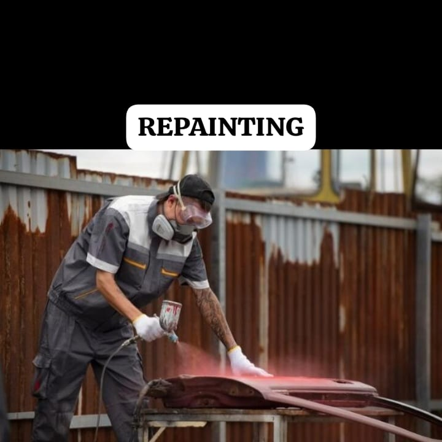
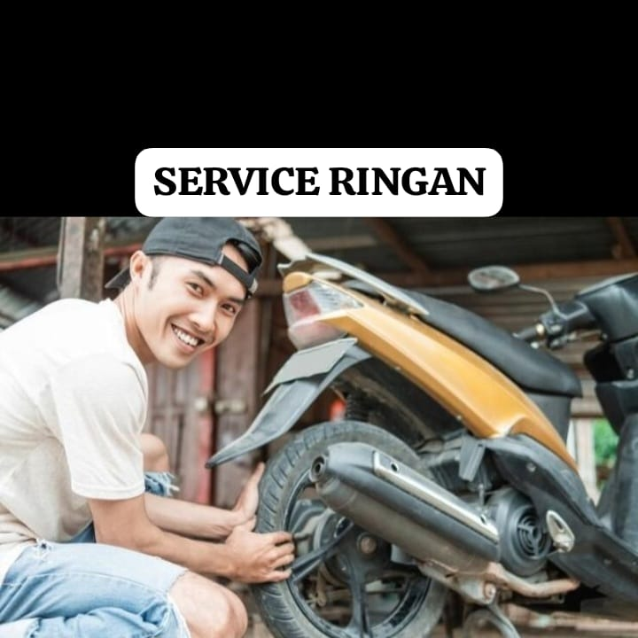
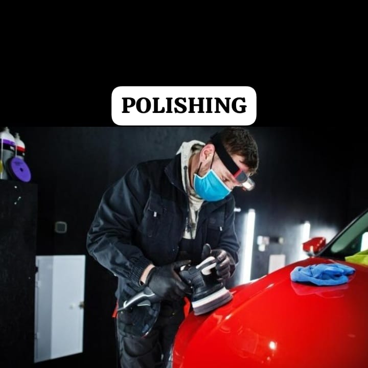

A2R PROJECT
Bengkel Terpercaya! Solusi Cepat dan Profesional untuk Kendaraan Anda!
Jaga Kendaraan Anda Seperti Sebuah Harta: Layanan Perawatan Motor Terbaik Hanya di Sini!
About Us
A2R PROJECT
Selamat datang di A2R PROJECT, tempat di mana keahlian bertemu dengan kepuasan pelanggan. Kami adalah bengkel yang berdedikasi untuk memberikan solusi terbaik untuk merawat dan memperbaiki kendaraan Anda dengan kualitas terbaik dan layanan yang ramah.
PROFILE
A2R PROJECT adalah bengkel yang berdedikasi untuk memberikan solusi terbaik untuk kendaraan Anda. Dengan pengalaman bertahun-tahun dalam industri otomotif, kami menghadirkan layanan perawatan dan perbaikan motor yang mengutamakan kualitas, keandalan, dan kepuasan pelanggan
VISI DAN MISI
Visi:
Menjadi bengkel terdepan yang memberikan solusi terbaik dan inovatif dalam perawatan dan perbaikan kendaraan, serta menjadi mitra terpercaya bagi pelanggan dalam memastikan keandalan kendaraan mereka.
Misi:
1.Memberikan layanan perawatan dan perbaikan kendaraan dengan kualitas terbaik dan terpercaya.
2.Mengutamakan kepuasan pelanggan dengan menyediakan layanan yang cepat, efisien, dan ramah.
3.Berinovasi secara terus-menerus untuk meningkatkan teknologi dan proses kerja demi memberikan solusi yang lebih baik kepada pelanggan.
4.Menciptakan lingkungan kerja yang profesional, kolaboratif, dan berorientasi pada kualitas dan keamanan.
5.Menjaga komitmen terhadap keberlanjutan lingkungan dengan meminimalkan dampak negatif terhadap lingkungan sekitar.
Dengan visi dan misi ini, Bengkel A2R PROJECT bertujuan untuk menjadi pilihan utama pelanggan dalam memenuhi kebutuhan perawatan dan perbaikan kendaraan mereka dengan layanan berkualitas tinggi dan kepuasan pelanggan yang diutamakan.
GALLERY
GALLERY ANAK A2R PROJECT


Selamat datang di galeri A2R PROJECT, tempat di mana kami memamerkan karya-karya kami yang penuh dedikasi dan keahlian dalam merawat dan memperbaiki kendaraan. Setiap gambar di galeri ini mencerminkan komitmen kami untuk memberikan layanan terbaik kepada pelanggan kami.
PRODUK KAMI
Berikut Beberapa Produk Yang Kami Tawarkan:
  Dengan produk-produk berkualitas dari Bengkel A2R PROJECT, Anda dapat memastikan bahwa kendaraan Anda mendapatkan yang terbaik. Jelajahi koleksi kami hari ini dan temukan produk yang sempurna untuk kendaraan Anda!
ARTIKEL
ARTIKEL A2R PROJECT
Motor bukan hanya sekadar kendaraan, tetapi juga simbol dari semangat, petualangan, dan persaudaraan. Di Bengkel A2R PROJECT, kami memahami nilai-nilai ini dengan mendirikan Klub Motor A2R PROJECT, sebuah komunitas yang didedikasikan untuk pecinta motor yang bersemangat. Klub Motor A2R PROJECT menarik anggota dari berbagai latar belakang dan model motor, bersatu dalam kecintaan mereka pada dunia motor. Di sini, setiap pengendara dapat menemukan lingkungan yang hangat, ramah, dan penuh semangat di mana mereka dapat berbagi pengalaman, pengetahuan, dan keahlian mereka dengan sesama penggemar motor. Selain itu, anggota Klub Motor A2R PROJECT juga mendapatkan berbagai manfaat eksklusif, termasuk diskon khusus untuk layanan bengkel, akses ke produk-produk berkualitas, dan kesempatan untuk berpartisipasi dalam kontes dan acara khusus lainnya. Bergabunglah dengan Klub Motor A2R PROJECT dan jadilah bagian dari sesuatu yang lebih besar dari sekadar berkendara - jadilah bagian dari sebuah komunitas.